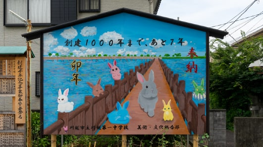
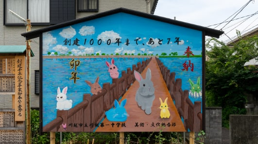

地域の方に今年の漢字を募集し、川越女子高等学校書道部の皆さんが書いた「輝」。川越市立第一中学校美術・文化部の皆さんが書いた絵馬。
ラストサンデーマーケットに対する想いや、川越に対する想いを語ってくださった御三方。
故きを温めて、新しきを知る。
川越という街─。
塔筋さん
川越に住む人や、これから川越に住みたいと考えている人にとって、古い町並みが残っていることや、神社やお寺があるということは、川越の一つのアイデンティティだと思います。そういった場所で行う朝市や、川越八幡宮に関わることができるということは、新しく外から来た人からすると、とても魅力的だと思います。
この度、ラストサンデーマーケットは川越市の後援事業になりました。川越市から公式にPRしていただけたり、街中の掲示板にもチラシを張ったりすることができます。今後、さらに多くの市民の方に、ラストサンデーマーケットを知っていただき、川越八幡宮を訪れていただきたいです。そして、街の中心で地域の人とつながり、仲間やコミュニティができて、川越の一員だと感じてくださると嬉しいですね。
地域の方に今年の漢字を募集し、川越女子高等学校書道部の皆さんが書いた「輝」。川越市立第一中学校美術・文化部の皆さんが書いた絵馬。
山田さん
先日、川越を出た中学の同級生が、わざわざ帰ってきてラストサンデーマーケットに出店してくれました。今も変わらず、川越に対する想いを持ち続けてくれていることが、とても嬉しかったです。
川越は、その時代時代で新しいことを取り入れているからこそ、古き良き伝統が繋がっていると思います。好奇心旺盛といいますか、新しいことにチャレンジするというのは、川越の気風かもしれないですね。
ラストサンデーマーケットに対する想いや、川越に対する想いを語ってくださった御三方。
川越百万灯夏まつり打ち水風情レポート ＞
2021年3月にお米がテーマの「8＋8cafe」を川越南通町にオープン。川越市からJリーグを目指す「COEDO KAWAGOE F.C」とブロンズパートナー契約を結んでいたり、やさしい米作りを行う「かわごえ里山イニシアチブ」の一員であるなど、ラストサンデーマーケット以外でも地域の活動に大きく貢献している。
川越八幡宮の宮司家に生まれ、川越で育つ。 趣味はマラソンで、2時間36分8秒の記録を持っている。川越八幡宮や川越の魅力を知ってもらうため、わんぱく相撲大会や、ちんじゅの森コンサートなど、境内で多くのイベントを開催し、地域の人から愛される神社にした。
川越生まれ川越育ち。多くの個人事業主や企業の方々と交流を持ち、川越市を盛り上げるためにさまざまなイベントなどに携わり、裏方として奔走している川越の仕掛け人。「川越の街にきもの姿を増やす会」や、「小江戸川越打ち水風情」の一員でもあり、川越の花手水界でも名が知られている。